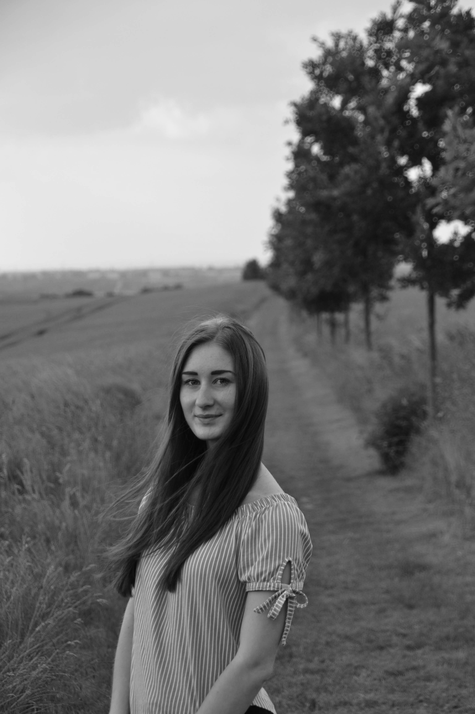

Eliška ŽMOLILOVÁ
- budoucí kodérka
Odmalička mě zajímaly různé technické obory. Když jsem si vybírala střední školu, tak jsem měla v hlavě různé klučičí obory, včetně programování, ale plno lidí mě odrazovalo, tak jsem po dlouhém vybírání skončila na obchodním oboru. Stále jsem ale cítila, že mi chybí ty technické předměty. Měla jsem štěstí, že jsem během školy narazila na IT letní školu od Czechitas pro holky ze středních škol, které nemají žádné zkušenosti v IT. Byla to skvělá vsuvka do mých ekonomických předmětů a konečně jsem si mohla vyzkoušet různé základy IT. Po střední škole jsem váhala jít studovat IT na VŠ, ale z mnoha důvodů jsem nakonec nešla. Aktuálně pracuji jako účetní a studuji dálkově VŠ - obor účetnictví. Nemůžu říct, že mě práce nebaví, ale s mojí technickou povahou stále v sobě cítím, že chci dělat něco, co mě bude ještě více bavit a naplňovat. Stále tíhnu k IT, tak jsem se rozhodla dostat se konečně do oboru pomocí kurzů a samostudiem. Aktuálně studuji semestrální kurz od Czechitas - Staň se kodérkou a musím říct, že už teď cítím v sobě vnitřní naplnění. Těším se, až budu mít dostatek znalostí, že budu moc rozjet kariéru v IT. Teď už se odradit nenechám!
05 2022 – X
Ústav makromolekulární chemie AV ČR
Finanční účetní
2022 - 2025
University College Prague - Vysoká škola mezinárodních vztahů a Vysoká škola hotelová a ekonomická s.r.o.
Obor - Účetnictví a finanční řízení podniku
2017-2021
Střední průmyslová škola dopravní, a. s., Praha 2
Obor - Obchodník
| Rok | Název kurzu | Obsah kurzu |
|---|---|---|
| 2018 | Czechitas - Letní škola IT | Obsah kurzu |
| 2018 | Vodafone - Code like a Girl – workshop pro budoucí kodérky | Obsah kurzu |
| 2021 | Centrum služeb pro podnikání s.r.o. - Účetnictví a daňová evidence - s využitím výpočetní techniky | Obsah kurzu |
| 2023 | Czechitas - Staň se kodérkou | Obsah kurzu |


email: elizabetaz@seznam.cz
telefon: +420 734 487 763
Facebook
Instagram